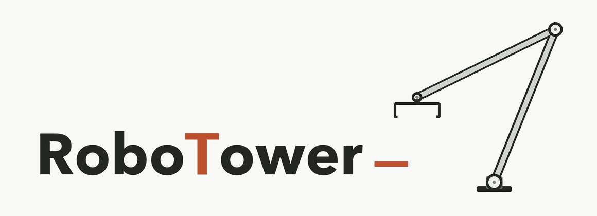

01
确定材料清单与尺寸
已确认当前 11 件：4 个方块、2 根长条、2 块薄板、2 个 L 形、1 个偏心 T 形。
台阶形已移除，其余尺寸不变。

不预设结构的开放式机器人搭建基准。
当前 11 件：4 个方块、2 根长条、2 块薄板、2 个 L 形、1 个偏心 T 形。
台阶形已移除，其余尺寸不变。
主分：最终最高合格结构的稳定高度（mm）。步数、Token 与费用单独列。
结束后观察 3 秒仿真时间；最后 1 秒角点运动范围 ≤ 2 mm，取该窗口最低高度。
结构须连接桌面；整个观察期间距机器人 ≥ 10 mm。
请求额度、异常终止与多轮汇总方式待讨论。
同一终态观察 3 / 5 / 10 秒，检查是否延迟倒塌；比较运动容差，检查慢滑与晃动。
复核 10 mm 净空判定，排查包围盒误判。按物理判定选阈值，不按模型得分选。
重复抓取、搬运、搭建、释放与撤手，记录材料相关的失败原因。